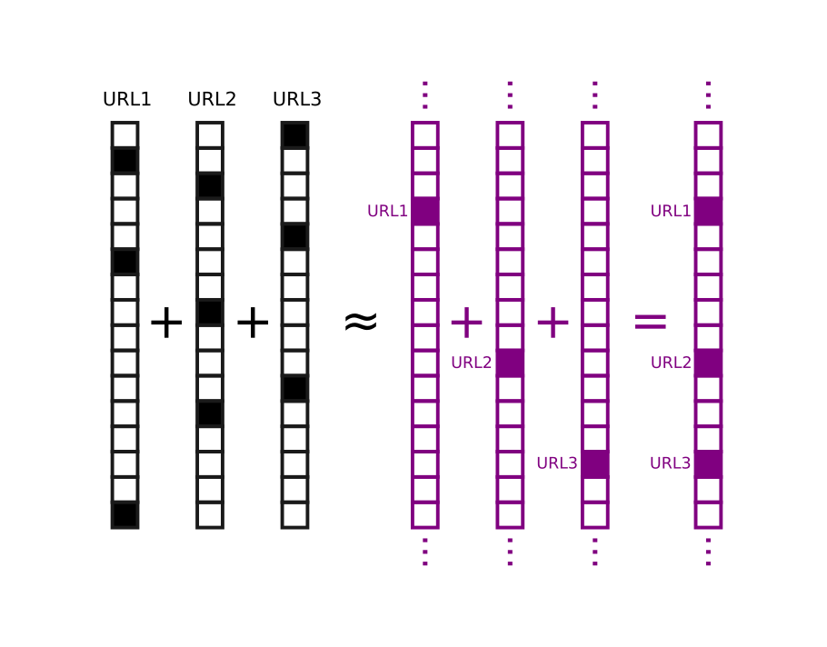

How to think in ten thousand dimensions
Rich Pang
2026-01-05
Many neuroscience and AI models operate in high-dimensional (HD) spaces, for instance with each dimension corresponding to the activation of a neuron. HD vectors have many interesting and useful properties that can appear rather counterintuitive.
In HD, for example, one can encode a set by summing or averaging its elements together. In low dimensions averaging throws away a lot of information: if one replaced the set \(\{3, 10, 2\}\) with its average, 5, it would be hard to decode or recover the original three elements from the number 5. In HD spaces such averaging can in fact preserve the original elements, which may seem surprising.
Below are two tricks to help make HD vectors more intuitive and predictable to think about. They are in fact quite related and meant to reflect dense and sparse, or "L2" and "L1" settings, which are important in both neuroscience and AI.
Imagine high-dimensional vectors as images
That sets can be represented as averages of their high-dimensional (HD) vector representations, or codewords, can be either derived mathematically or understood intuitively by thinking of the codewords as images.
Mathematically, random HD vectors are almost orthogonal with very high probability:
\[\mathbf{r}_1 \cdot \mathbf{r}_2 \approx 0\]
when the individual elements of \(\mathbf{r}_1\) and \(\mathbf{r}_2\) are i.i.d. This can be shown with a bit of algebra. It can also be shown that it is possible to sample an exponentially large number \(\exp(cN)\) of such codewords, where \(N\) is the dimensionality of \(\mathbf{r}_i\), although the proof is more complex. This is quite qualitatively different from the number of exactly orthogonal codewords, which is just \(N\). There are many more than \(N\) HD codewords if near-orthogonality suits one's purposes.
Construct a set of codewords in this way, \(\mathbf{r}_1 \dots \mathbf{r}_K\), corresponding to some set of items \(1\) through \(K\), and with the codewords normalized such that \(\mathbf{r}_i \cdot \mathbf{r}_i \approx 1\). Pick items \(k, l, m\) and average their codewords:
\[\mathbf{r}_{avg} = \frac{1}{3}\left(\mathbf{r}_k + \mathbf{r}_l + \mathbf{r}_m \right).\] To verify that this quantity stores the set \(\{k, l, m\}\) we check codeword \(\mathbf{r}_{k'}\) for \(k' \in \{k, l, m\}\) and \(k' \notin \{k, l, m\}\). We perform the check by taking the dot product \(\mathbf{r}_{k'} \cdot \mathbf{r}_{avg}\).
In the former case, suppose \(k' = k\). Then we have
\[\begin{split} \mathbf{r}_{k} \cdot \mathbf{r}_{avg} & = \frac{1}{3}\left(\mathbf{r}_{k} \cdot \mathbf{r}_k + \mathbf{r}_{k} \cdot \mathbf{r}_l + \mathbf{r}_{k} \cdot \mathbf{r}_m \right) \\ & \approx \frac{1}{3} + 0 + 0 = \frac{1}{3} \\ \end{split}\]
In the latter case:
\[\begin{split} \mathbf{r}_{k'} \cdot \mathbf{r}_{avg} & = \frac{1}{3} \left(\mathbf{r}_{k'} \cdot \mathbf{r}_k + \mathbf{r}_{k'} \cdot \mathbf{r}_l + \mathbf{r}_{k'} \cdot \mathbf{r}_m \right)\\ & \approx 0 + 0 + 0 = 0 \\ \end{split}\] Hence, whether the dot product is different from zero reveals whether any test element is in the subset represented by \(\mathbf{r}_{avg}\), with an accuracy that depends on how many elements are in the set.
While the algebra above is simple and elegant, consider the following image, which is itself the superposition of three famous images. We have decreased each original image's opacity such that each resulting pixel is an average of the corresponding pixels in each image.

The average clearly retains the identities of the original images in some meaningful sense. Images that are not in the superposition have low overlap with it, and images that are in the superposition have high overlap. Curiously, whereas decoding the elements from the image in the algebraic manner described above requires checking each element against \(\mathbf{r}_{avg}\), our brains seem to be able to decode the superimposed images quite quickly.
Think of sparse binary vectors as one-hot vectors in an even higher dimensional space
Sparse binary HD vectors are useful when non-negativity and finite resolution needed, e.g. when mapping codewords to binary memory elements in a computer or neural "spike words". Although such vectors distribute information over multiple elements of the vector (this is one of their benefits, in fact), they can often be intuitied about by imagining them as 1-hot vectors in an even higher dimensional space. In both cases, all elements are positive, different codewords are orthogonal (or nearly orthogonal), and the codewords are sparse, with most elements zero.
This perspective illuminates the basic action of a Bloom filter, for example. Bloom filters are data structures used for set membership querying (e.g. to test whether a URL is in a set of previously visited URLs). They operate by mapping each element (URL) to a collection of \(Q\) bits in an array of size \(B\) using a hash function, such that the bits assigned to each element are a pseudorandom deterministic function of the element. Elements are added to the BF by setting their bits in the array to 1. Elements are decoded by comparing the codeword for an element with the BF itself. If fewer than \(Q\) bits match, the element is not in the BF. If all \(Q\) bits match, the element may be in the BF, with a false positive rate that depends on how many elements have been stored.
Our analogy lets us think of the element codewords, which are \(Q\)-hot vectors in a \(B\)-dimensional space, as 1-hot vectors in an \(\sim \exp{cB}\) dimensional space. In turn, storing elements corresponds to looking up the index "assigned" to the element in the \(\sim \exp{cB}\) dimensional space and setting its bit to 1. Querying the BF then amounts to computing the codeword for a test element and checking whether the bit at its address in the higher dimensional space is set to 1.

Thus, sparse binary HD vectors receive the benefits of dimensionality yet act in many ways like 1-hot vectors. The correspondence breaks down when the BF inevitably "fills up", but it does so gracefully. The above picture makes intuiting about variations of BFs simpler as well, for instance if elements decay over time. The image analogy discussed above can also be relevant to Bloom filters.
Many brain areas are also thought to exhibit sparse HD neural codes, for instance in the hippocampus or insect mushroom body, which are thought to reflect the results of pattern-separation or decorrelation operations. As we have seen, such codes can behave similarly to 1-hot codes in higher dimensional spaces.